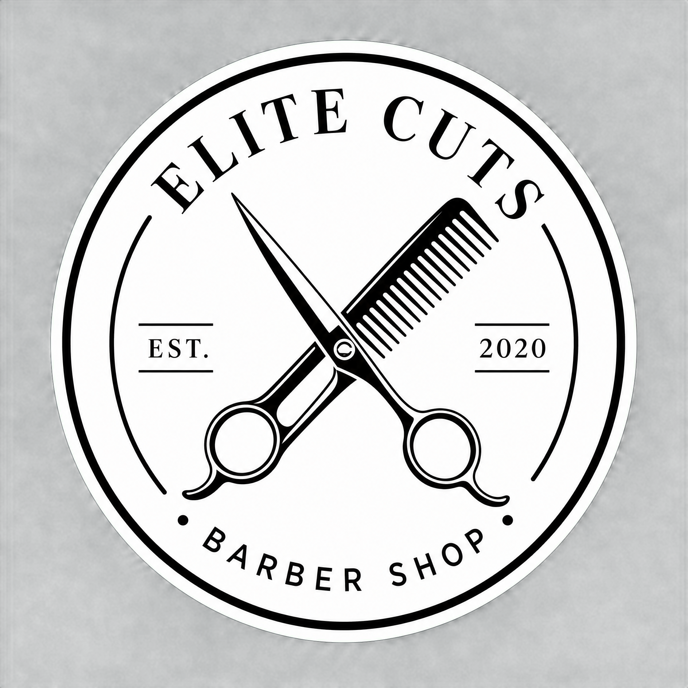

Sağlıklı saçlar, doğru bakım rutiniyle başlar. Saç tipinize uygun şampuan seçimi, saç derinizin dengesini korumak için hayati önem taşır.
Öneri: Saçlarınızı her gün yıkamak yerine, haftada 3-4 kez yıkamaya özen gösterin. Bu, saç derisindeki doğal yağların korunmasına yardımcı olur.
Sakal sadece uzatmak değildir, aynı zamanda düzenli bakım gerektirir. Sakal altındaki cildin nemlendirilmesi, kaşıntıyı önler ve sakalın daha sağlıklı uzamasını sağlar.
İpucu: Sakal yağı ve sakal balmı kullanarak sakallarınızı yumuşatın ve parlatın. Ayrıca düzenli tarama, kıl köklerini uyarır.
Piyasada binlerce ürün var ancak hangisi sizin için doğru? Sert kimyasallar içeren ürünlerden kaçınmak, uzun vadede saç dökülmesini ve yıpranmayı azaltır.
Saçlarınızın formunu koruması için 4-6 haftada bir düzenli olarak berbere gitmelisiniz. Bu, kırıkların temizlenmesini ve stilinizin her zaman taze kalmasını sağlar.